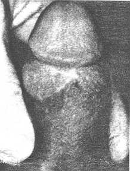
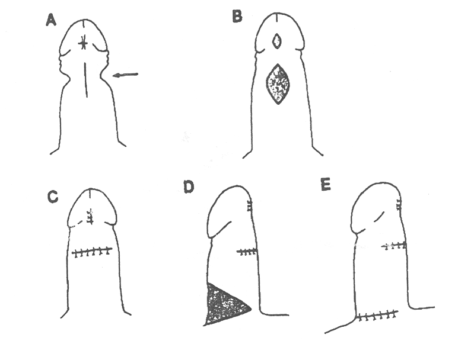
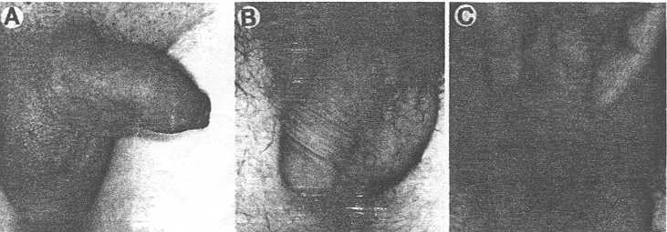
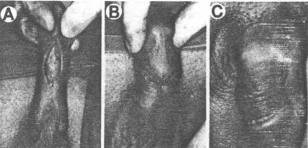

Copyright 1995 by American Urological Association, Inc.
HIROYUKI OHJIMI, KOSUKE OGATA AND TOSHIHIDE OHJIMI
From the Division of Plastic and Reconstructive Surgery, Department of Orthopaedic Surgery, School of Medicine, Fukuoka University, Fukuoka, Japan.
ABSTRACT
Infantile circumcision is not ordinarily performed in Japan. Adult circumcision causes esthetic problems with scarring and color change, especially in Asian patients. We report our experience with ten adults who underwent a new method of surgery for correction of phimosis via a longitudinal circumcision of the prepuce along the constricted area ventrally to release constriction, followed by tranverse closure of the wound; removal of excess skin by pinching at the dorsal root of the penis, incising circumferentially except for 2 cm. of ventral skin, and closing the dorsal wound. Functional results in all cases were satisfactory and preputial constriction was fully relieved. Cosmetic results were superior to those of conventional circumcision and dorsal slit methods of adult circumcision because contrasting coloration was obscured behind pubic hair and scarring was coincidental with or beneath the pubic hairline.
KEY WORDS: circumcision, penis, phimosis
Operations to alleviated phimosis are usually performed for urological hygiene and/or because of religious or social custom. Worldwide this operation is known as circumcision and it is usually performed immediately after birth or before adolescence.1 Infantile circumcision is not ordinarily performed in Japan but many adults with phimosis elect circumcision. The resultant 2-tone color change and/or conspicuous scar is often deemed to be disadvantageous, especially in Asians because of the obvious contrast between the inner part of the prepuce and proximal penile skin color (fig. 1). We report a new surgical method for the relief of adult phimosis.
MATERIALS AND METHODS
All patients were evaluated clinically before surgery for retractability of preputial skin. If the prepuce could be retracted, a longitudinal incision was made along the constricted area at the penile raphe ventrally to release the constriction. (fig. 2,A). This incision extended into the skin and the fibrosis of the stenosis to relieve fully constriction of the prepuce (fig. 2,B). If the prepuce could not be retracted, a longitudinal incision was made ventrally though the outer layer of the prepuce. After retracting the prepuce the incision was extended along the inner layer. Bleeding was controlled through the use of an electrocoagulator, after which the skin was approximated transversely with absorbable sutures (fig. 2,C). If necessary, any dog ear deformity was corrected at this stage. If the frenulum was shortened, we released it fully by transection. Subsequently, we retracted the glans completely, measured the excess skin by pinching dorsally at the root of the penis and removed the excess skin above the loose connective tissue circumferentially except for 2 cm. of ventral skin (fig 2,D). The resultant wound was then closed (fig. 2,E).

Fig. 1. Adult with phimosis who underwent conventional circumcision. Resultant 2-tone color change at shaft of penis is especially conspicuous in Asian patients.
From 1988 to 1993, 10 patients underwent surgery for phimosis. Patient age ranged from 16 to 38 years (mean 23.2). The patients included 4 with true phimosis and 6 with pseudo-phimosis with preputial stenosis. The 10 patients who underwent this type of surgery had better cosmetic results than those who underwent traditional circumcision because the surgical wound was hidden behind pubic hair. Preputial stenosis was relieved fully in all cases.
CASE HISTORIES
Case 1. An 18-year-old man presented
with true phimosis. Intraoperatively, forcible retraction of
the prepuce by the surgeon showed constriction of the glans
penis proximally. A longitudinal skin incision was made along
the constricted area ventrally and the wound was closed
transversely. Five cm. of skin were removed at the dorsal
root of the penis. During 2 years of followup the patient
expressed satisfaction with the cosmetic result. Preputial
stenosis was relieved fully after surgery. (fig. 3).
Case 2. A
38-year-old man presented with phimosis. When the prepuce was
retracted constriction resulted within the penile shaft.
Intraoperatively, constriction was released fully and excess
skin was removed at the dorsal root of the prepuce and the
postoperative cosmetic result (fig. 4).

Fig. 2. Surgical procedure for relief of adult phimosis. A, longitudinal incision is made at constricted area of penis ventrally (arrow). B, frenulum is resected if it is shortened. C, skin is approximated transversly. D, dorsal skin at root of penis is removed circumferentially except for 2 cm. of ventral skin. E, skin is sutured.

Fig. 3 Case 1. A, preoperative procedure. B, dorsal view 1 year postoperatively, C, ventral view 1 year postoperatively.

Fig. 4 Case 2. A, longitudinal incision is made at constricted area along penile raphe. B, wound is closed transversely. C. Skin is excised circumferentially along root of penis except for 2 cm. of ventral skin.
DISCUSSION
Despite conservative recommendations by the American Academy of Pediatrics and the American College of Obstetricians,2 the proportion of circumcisions performed on neonates approaches 80% in the United States.3 Routine neonatal circumcision is not preformed in Japan. Inflammatory diseases of the foreskin (balanitis and phimosis) comprise the major indications for adult circumcision.4,5
The two surgical methods predominating the treatment of phimosis are circumcision and the dorsal slit procedure.6,7 As an alternative to circumcision in the treatment of phimosis, many different operative methods can be used, including Y-V8 and 4 V-flap repairs.9 As a rule, a retractable prepuce, results. However the 2-tone color change with a conspicuous scar on the dorsal penis becomes an embarrassment to some patients who undergo circumcision or a dorsal slit procedure, especially Asian patients in who there is an obvious contrast between the inner layer of the prepuce and proximal penile skin color (fig. 1.). Patients also are embarrassed by the appearance of the surgical wound on the dorsal penis which is easily noticed at public baths in Japan.
[CIRP Note: The treatment of phimosis has changed radically since this paper was published in 1995. The treatment of choice for phimosis is now medical treatment with topical steroid ointment. The favored surgical treatment is a dorsal slit with transverse closure.]
In 1981 we reported a method of treatment for adult phimosis consisting of circumferential excision of the skin at the root of the penis.10 Good cosmesis resulted because the surgical wound was hidden behind pubic hair. However, in some cases delayed swelling of the prepuce and/or insufficient relief of preputial stenosis occurred. we now report a new method of surgery for relief of phimosis in adults such the inner prepuce covers the dorsal penis postoperatively. We remove no part of foreskin except for minimal revision of the dog-ear deformity caused by the ventral incision and closure. Therefore there is no color contrast because the foreskin is gradually pulled back. Skin color gradually changes from the glans penis to the root of the penis without a scar on the dorsal distal penis. The appearance of the penis is natural. The ventral skin is not redundant after surgery since it is pulled longitudinally by a longitudinal incision made ventrally, which is then closed transversely (figs. 2 and 4). Postoperative swelling of the penile skin is reduced rapidly by leaving part of the ventral skin at the root of the penis.
This new method resolved both postoperative problems that occurred using our previously reported treatment for adult phimosis.10 Cosmesis was satisfactory. Overall results were deemed to be an improvement over circumcision and the dorsal slit procedure for the relief of adult phimosis.
Mr. Timothy Cornish provided English translation.
REFERENCES
1. Elder, J. S. and Duckett, J. W.: Perinatal urology. In: Adult and Pediatric Urology. Edited by J. Y. Gillenwater, J. T. Grayhack, S. S. Howards and J. W. Duckett. Chicago: Year Book Medical Publishers, vol. 2, chapt. 46, pp. 1512-1603, 1987.
2. Guidelines for Perinatal Care, American Academy of Pediatrics and the American College of Obstetricians and Gynecologists, p. 87, 1983.
3. Wallerstein, E.: Circumcision. The uniquely American enigma. Urol. Clin. N. Amer., 12: 123, 1985.
4. Kaplan, G. W.: Circumcision - an overview. Curr. Prob. Ped., 7: 1, 1977.
5. Fakjian, N., Hunter, S., Cole, G. W. and Miller, J.: An argument for circumcision. Arch. Dermatol., 126: 1046, 1990.
6. Diaz, A. and Kantor, H. I.: Dorsal slit. A circumcision alternative. Obst. Gynec., 27: 619, 1971.
7. Holmlund, D. E.: Dorsal incision of the prepuce and skin closure with Dexon in patients with phimosis. Scand J. Urol. Nephrol., 7: 97, 1973.
8. Hoffman, Metz, P. and Ebbehoj, J. A new operation for phimosis: prepuce-saving technique with multiple Y-V plasties. Brit. J. Urol., 56: 319, 1984.
9. Emmett, A. J.: Four V-Flap repair of preputial stenosis (phimosis). An alternative to circumcision. Plast. Reconstructr. Surg. 55: 687, 1975.
10. Ohjimi, T. and Ohjimi, H. Special surgical techniques for relief of phimosis. J. Dermatol. Surg. Oncol., 7: 326, 1981.
http://www.cirp.org/library/treatment/phimosis/ohjimi/